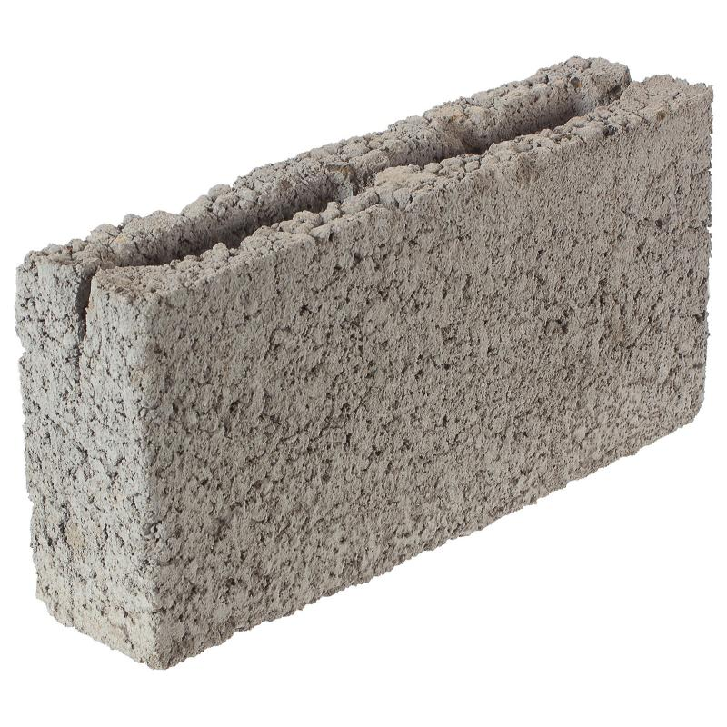

Магазин строительных блоков
Блок перегородочный керамзитобетонный 390x90x188 мм

Описание
Перегородочный керамзитобетонный блок размерами 390×90×188 мм с толщиной боковых стенок 30 мм.
Отлично подходит для возведения внутренних облегченных стен, разделительных элементов в подземных
парковках или боксах гаражей. Простой и надежный стройматериал, позволяющий быстро возвести перегородочную
стену, без которой не обойдется ни одно помещение. За счет узкой ширины 9 см увеличивает полезную площадь вашего жилья.
Характеристики
- Артикул: 18738548
- Вес, кг: 6
- Высота (см): 18.8
- Длина (см): 39
- Толщина (см): 9